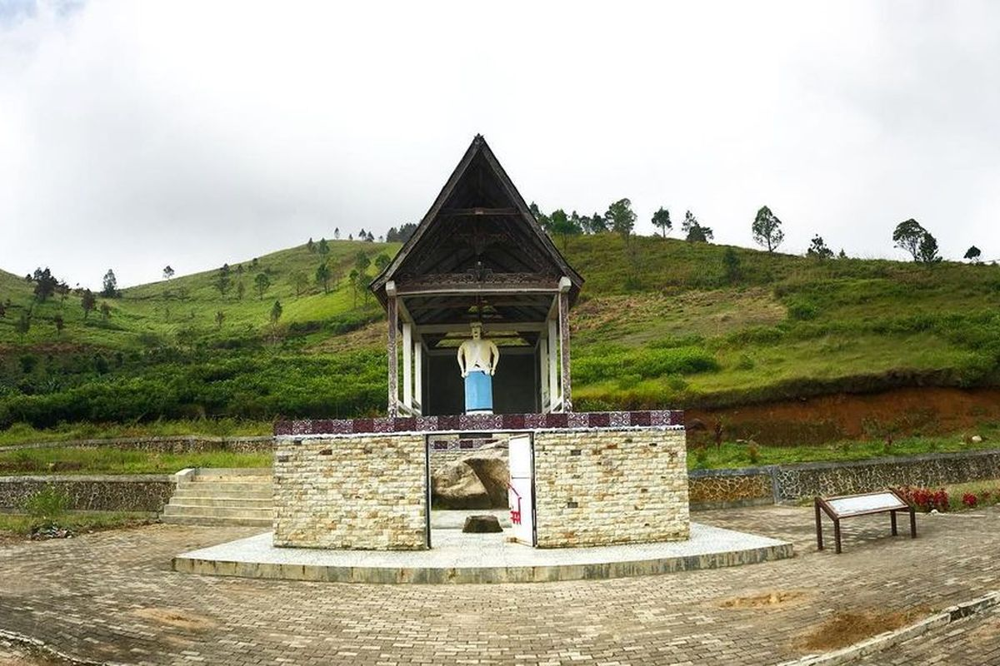
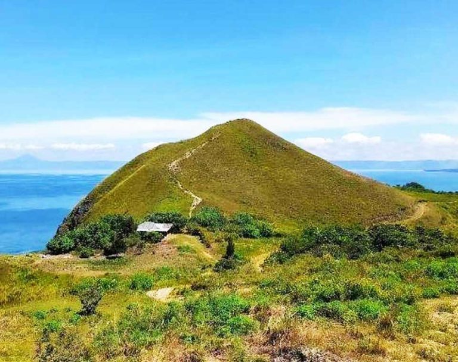

Kecamatan asri, maju, dan sejahtera
Jelajahi DesaHasil pertanian unggulan seperti padi, jagung, dan sayuran segar.
Pemandangan alam yang indah dan cocok untuk wisata keluarga.
Produk lokal berkualitas seperti kerajinan tangan dan kuliner khas.

